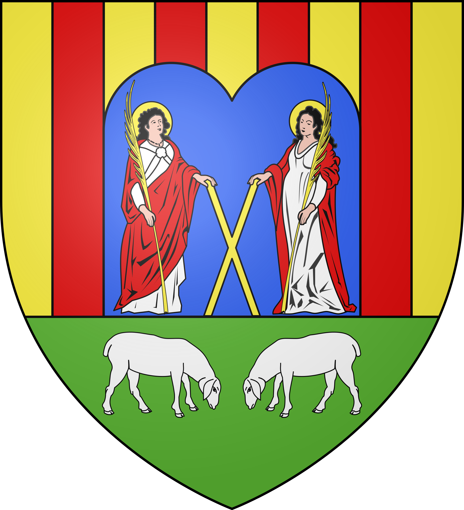
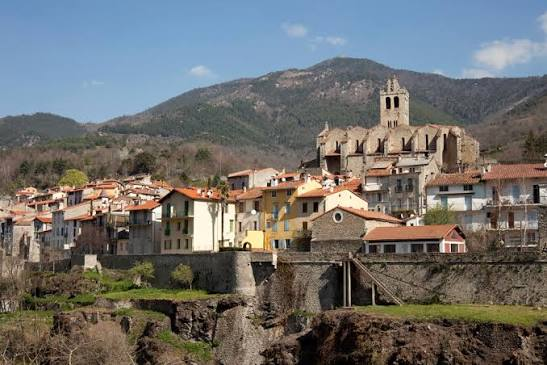

Prats-de-Mollo
la Preste


⟹ Plus Beaux Villages de France · Cité fortifiée par Vauban ⟸

Nichée tout au bout de la vallée du Tech, dans le Haut-Vallespir, Prats-de-Mollo-la-Preste s'est développée dès le XIIIe siècle sous l'impulsion du roi d'Aragon Jacques Ier, après que le traité de Corbeil de 1258 eut fixé la frontière du royaume de France plus au nord. Ville royale, elle obtient au fil des décennies privilèges et franchises qui favorisent son essor : liberté d'installation, marché hebdomadaire, développement d'une draperie locale renommée.

Une première enceinte fortifiée ceint la ville dès le milieu du XIVe siècle. Ébranlés par le violent séisme de la Chandeleur en 1428, les remparts sont relevés puis à nouveau détruits au XVIIe siècle lors de la révolte des Angelets, un soulèvement populaire contre la fiscalité royale et la gabelle du sel imposée après le rattachement du Roussillon à la France.
C'est Vauban qui, à partir de 1683, reconstruit les remparts tels qu'on les découvre aujourd'hui et fait édifier, sur les hauteurs, le fort Lagarde, relié à la vieille ville par un chemin couvert souterrain. Sa mission : verrouiller la nouvelle frontière fixée par le traité des Pyrénées et surveiller le col d'Ares, porte d'entrée vers l'Espagne.
Aujourd'hui labellisée parmi les Plus Beaux Villages de France, Prats-de-Mollo conserve un tissu médiéval remarquablement préservé, partagé entre Ville haute et Ville basse par le torrent de la Guillema, avec ses maisons de schiste, ses fontaines, ses lavoirs et ses ruelles pavées de galets.
Prats-de-Mollo est indissociable de la Fête de l'Ours, tradition ancestrale inscrite à l'inventaire du patrimoine culturel immatériel, qui réunit chaque février toutes les générations autour de la légende d'un ours capturé et transformé en humain.
La ville doit aussi son visage à Vauban, dont l'empreinte militaire — remparts reconstruits, fort Lagarde, chemin couvert — façonne encore aujourd'hui l'identité du village, symbole de la frontière catalane retrouvée après le traité des Pyrénées.
Accès : à environ 50 km de Perpignan par une route sinueuse remontant toute la vallée du Tech, via Le Boulou et Arles-sur-Tech.
Office de tourisme : situé dans la Ville basse, il propose des visites guidées des remparts et du fort Lagarde en saison.
Randonnée : plus de 300 km de sentiers balisés partent du village, dont le tour de Mir et l'ascension du pic Costabonne.